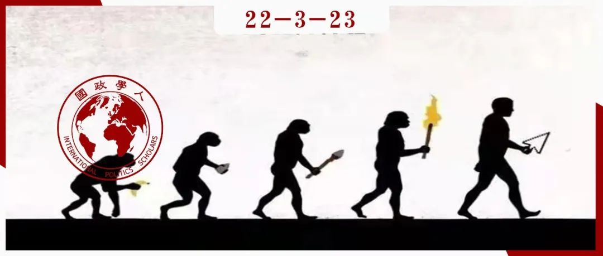

收录于合集

基于生态位视角下的中美两国与国际秩序
作者： John M Owen，弗吉尼亚大学政治系教授，他是文化高级研究所和米勒公共事务中心的高级研究员。
编译： 董诗（国政学人编译员，吉林大学行政学院）
来源： John M Owen, Two emerging international orders? China and the United States, International Affairs , Volume 97, Issue 5, September 2021, Pages 1415–1431, https://doi.org/10.1093/ia/iiab111

导读
本文引入了达尔文进化论中的“生态位构建”这一概念。有些生物可以改变周围环境从而适应自己的生存，而对应到国际政治中不难发现也有类似的行为：政府为了稳定国内政权从而努力影响其内外部环境。如今中国的不断崛起对于原有的国际秩序产生了深刻影响，中美两国为了维持本国政权稳定都做出举动试图改变国内外环境。但是在作者看来，中国不会谋求一个自己主导的国际秩序，而是在原有的、由美国主导的自由国际主义秩序的基础上进行调整，因此不会出现两个国际秩序。作者试图把生物学的框架应用到国际政治当中，但是这种尝试需要更多的实例来进一步论证他的观点。
编译
01
引言
去全球化的持续发展并不会导致国家之间各自孤立，而是会催生两个部分重叠的国际秩序：一个是以美国为首的自由国际主义秩序(liberal international order，简称LIO)，另一个是威权主义国际秩序(authoritarian–capitalist international order，简称ACIO)。之所以这一均衡状态可能会达成，是因为国际秩序的核心目的是维护其主导大国的国内制度。鉴于美国和中国拥有完全不同的国内制度，因此随着中国国家实力和国际影响力的持续增长，中美两国之间的紧张局势会进一步加剧。
作者从达尔文进化论中借用了“生态位构建”（niche construction）的概念： 正如有机体通过操纵其所处的自然环境来改变表型选择（phenotype selection）一样，国家也可以通过塑造其所处的国际环境来改变其对国内制度的“选择”。 “国际生态位构建模式”包括外部政权推动模式、相互依存模式、跨国互动模式和多边制度模式。美国及其盟国在第二次世界大战后建立的自由民主“生态位”使他们支持的意识形态保持了数十年的优势。今天，中国正试图通过各种方式建立一个“生态位”，以消除国际制度中对本国的不利因素并维护政权。
02
进化论与国内政权选择
自从达尔文的著作在19世纪问世以后，社会学家就开始用进化论的观点进行研究。同样在国际关系学界，很多学者用进化论的逻辑来解释国际规则和国际实践的形成、全球化的出现、主权国家的诞生以及世界政治的形成。就本文而言，作者借助进化论的逻辑来解释国家政权的延续和变化。
国际关系学者普遍认为，国家生存在影响其行为和利益的环境、体系或结构中。比如，结构现实主义强调无政府状态和军事力量；制度主义和英国学派强调国家之间的互动；建构主义强调身份和规范等等，这些理论对国家的影响各异。此外，学者们也重视国家在环境中自由行事的能力。比如，温特认为结构虽然制约着国家行为，但是国家也可以通过实践产生和复制结构；霸权稳定论强调霸权国家对国际规则具有重大影响力等等。
在作者看来，如果一个国家所处的环境可以影响国内政权的生存，那么政府可能会塑造这种环境。 对于多数政府而言，国内政权最为重要，政权的倒台意味着政府的倒台。因此，有理由认为各国想努力通过塑造环境永久维持政权，而非破坏能够维持政权的环境。塑造“有利于国内政权的环境”使人联想到了达尔文进化论。比如，在一些雪地中生存的动物物种中，白色皮毛的基因占主导地位，因为白色动物能够更好地在雪地中躲避捕食者和猎物。因此帮助他们孵化了更多的后代，后代正是得益于白色皮毛从而提高了存活率。
03
生态位建设
生物在面对自然环境时并非被动， 而是通过建立“生态位”改变环境从而适应生存， 最明显的例子便是鸟巢和海狸坝。近年来生物学家们发现，尽管生物建构生态位是为了更好地生存，但它们也可以有效地重新引导环境对物种进行选择。就改变后代的生态遗传而言，生物们有时会无意中建立一个反馈回路，从而使进化的结果产生偏差。比如，为了获取喜欢吃的植物，那些具有特大牙齿和喜欢群居的海狸开始建造水坝。此后水坝便为具有筑坝特征的海狸提供了繁殖优势，导致海狸的繁衍主要以大齿和群居海狸为主，小齿海狸最终消失。由此可见，有些物种与环境共同进化。
可以通过上述的说法改写这种观点：认为其国内政权易受攻击的国家领导人应该尝试进行生态位建设来维护政权，而更强大国家的领导人有时会成功。 国家领导人像海狸一样可以有意改变环境带来的限制和机遇，但是不能创造或完全改变国家的环境并受到环境的制约。 作者在此重点探讨作为“国家基因”的两个互相竞争的政权下，各自的拥护者们在国内形成的权力对峙。通过革命、政变或渐进式“改革”实现的政权更迭，将在一国精英群体之间的权力平衡充分转变时发生。如果一个国家想要继续维持民主，那么该国政府的重要任务之一便是塑造合适的环境，以确保民主的力量强于威权主义的力量。
影响一国国内政权生存的环境因素包括：
（1）政体类型的国际分布：包括哪些国家拥有与本国相同的政体；这些国家是否强大；它们的空间分布等等。
（2）政权类型在安全、稳定和财富方面的不同表现。
（3）主要的国家规范、规则和实践：包括国家在多大程度上尊重彼此的主权（比如对人权的尊重）；国家在多大程度上将合作制度化等等。
政府可能会无意中以影响国内政权生存的方式塑造环境。政府也可能犯错误，意图塑造环境以延续其政权，但实际上却在破坏它。
04
作为生态位建构的自由国际主义
全面国际生态位建设的突出例子之一是始于第二次世界大战结束的欧洲、北美和日本等民主国家的自由国际主义。 作者提出，自由国际主义是美国创造的、用于维护自由主义和民主秩序而做出的努力，这也在一定程度上制衡了苏联。
首先，民主国家必须通过一系列多边机构协调货币和贸易关系。 这带来的结果是嵌入式自由主义（embedded liberalism）受到多边机构矩阵式的保护，挽救了深陷国际收支危机中的民主国家，并帮助它们谈判、减少贸易壁垒等等。 第二，极端主义意识形态必须被发达工业国家排除在权力之外。 在美国看来，苏联的存在已经危及美国的民主，因此在这些发达工业国家维护和传播民主是美国的利益所在。比如，美国为了增加就业和工业产出而对日本和西欧提供了马歇尔援助；大力发展软实力，借助美国之音等频道以及美国大学的教育等来推进多党宪政民主。 第三，民主国家需要彼此帮助。 二战结束后美苏矛盾加剧，苏联的实力也让西欧国家十分忌惮。因此，1948年英国外交大臣欧内斯特·贝文（Ernest Bevin）领导多个欧洲政府签署了《布鲁塞尔公约》。1949年欧洲与美国谈判成立了北大西洋公约组织。
05
中国：打造一个属于自己的生态位
作者在此主要强调中国的持续崛起对国际秩序的影响。自改革开放以来，中国开始参与到国际事务当中。中方明确表示，自由主义秩序对中国有偏见，并且试图减少这种偏见。比如，把“国际秩序”（international order）和“世界秩序”（world order）区分开来，前者是一个承认所有国家主权平等的法律体系，中国承认它是合法的；后者是西方主导的、压制中国和其他欠发达国家的美国式和平，中国认为是“不公正和不合理”的。
因此，中国也需要建构生态位使国际体系对自己更加公平合理。首先，中国加大努力把外国经济融入到中国经济中。 “一带一路”倡议是中国努力的典型代表，一旦成功，中国将通过债务、运输和进口等方式增强与沿线国家的交往与联系，从而减轻自由国际秩序对中国的压力。 其次，中国积极参与国际制度和规范建设。 中国于2013年成立的亚洲基础设施投资银行对外贷款不附加任何政治性条款，这与世界银行和亚洲开发银行等老牌国际金融机构形成了鲜明对比。 第三，中国正试图输出其政府模式的要素。 比如中国邀请欠发达国家的官员前来学习中国改革开放以来成功经验等等。 第四，中国也致力于建立和使用软实力， 比如在数十个国家建立了数百所孔子学院。总的来说，中国生态位构建的方式不如二战后的美国那样直接。
06
一个全球体系下的两个国际秩序？
是否会出现自由国际主义秩序和威权主义国际秩序共存的局面呢？ 作者认为中国不会寻求建立一个自己领导的国际秩序。 首先，建立新秩序成本巨大，需要的资源众多，并不符合中国的整体利益；其次，由于中国不与任何国家结盟，威权主义秩序可能会很脆弱，其强大程度比不上以美国的安全承诺为核心的自由主义秩序；最后，许多国家，尤其是东南亚国家，都竭力避免在两个体系中站队，不想加入任何一方。因此，中国的目标是留在自由国际主义秩序中，并对其进行调整。
中美两国关系没有必要重现20世纪50年代的冷战风格，但如果去全球化继续下去，可能会产生两个国际秩序。虽然两种秩序可以帮助这两个核心国家维持各自偏好的政府体系和生活方式，但这背后必然需要耗费很大成本。但是在作者看来，有舍才有得，牺牲一些财富来维护高度重视的国内政权可能比在单一全球体系中争夺霸权要好。
词汇整理
生态位构建 niche construction
表型选择 phenotype selection
嵌入式自由主义 embedded liberalism
审校 | 董黛 曾庆鸣
排版 | 柴昕彤 杨凌晶
文章观点不代表本平台观点，本平台评译分享的文章均出于专业学习之用, 不以任何盈利为目的，内容主要呈现对原文的介绍，原文内容请通过各高校购买的数据库自行下载。

国政学人
支持学术公益与知识传播
微信扫一扫赞赏作者 __赞赏
已喜欢，对作者说句悄悄话
取消 __
发送给作者
发送
最多40字，当前共字
上一页 1/3 下一页
长按二维码向我转账
支持学术公益与知识传播
受苹果公司新规定影响，微信 iOS 版的赞赏功能被关闭，可通过二维码转账支持公众号。